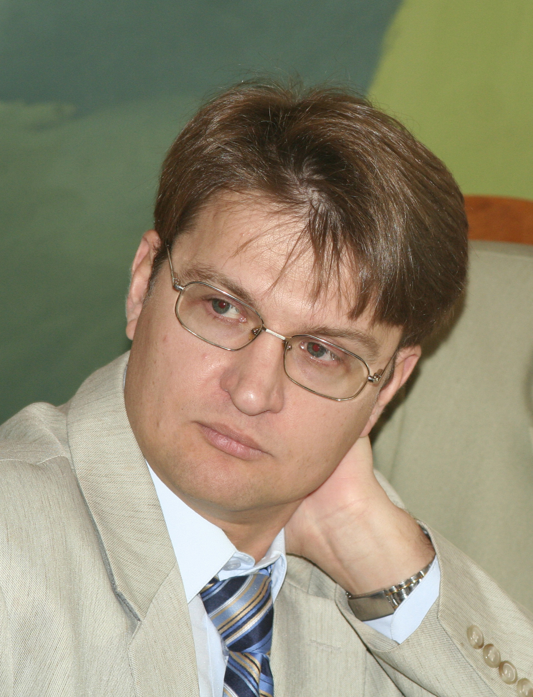
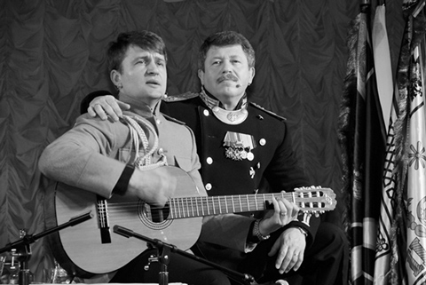

Образование
1993 — Киевское государственное училище эстрадно-циркового искусства
2006 — Литературный институт им. А.М. Горького
Официальный сайт
Актёр, певец, композитор и продюсер.
Генеральный директор кинокомпании «ЧЕРОМАФИЛЬМ».

17 декабря 1967 года в Усть-Каменогорске, в Восточном Казахстане, родился будущий мастер советского и российского кинематографа.
1993 — Киевское государственное училище эстрадно-циркового искусства
2006 — Литературный институт им. А.М. Горького
С 2005 года — генеральный директор и продюсер кинокомпании «ЧЕРОМАФИЛЬМ».
Кинокомпания, создающая произведения высокого художественного уровня.
Медаль им. М.И. Глинки «За вклад в развитие музыкального искусства».
Приз «Глас Ангельский России» (Москва, 1997).
Лауреат конкурса авторской песни (Москва, 1998).
Гран-при конкурса (Одесса, 1995). Фестиваль песен об Одессе.
Лауреат «Песенного вернисажа» (Киев, 1993).
Кино, музыка и литература
как единое творческое пространство.
Обширная география выступлений с концертными программами и творческими встречами в России и за рубежом: Севастополь, Гурзуф (Артек), Алушта, Донецк, Луганск, Тула, Курск, Липецк, Калуга, Рязань, Волгоград, Астрахань, Ростов-на-Дону, Тамбов, Саранск, Пенза, Ульяновск, Оренбург, Москва и Подмосковье, Рига, Резекне, Псков, Великий Новгород, Санкт-Петербург, Гатчина, Петрозаводск, Костомукша, Архангельск, Плесецк, Нарьян-Мар, Мурманск, Ярославль, Кострома, Нижний Новгород, Киров, Ижевск, Пермь, Екатеринбург, Нижний Тагил, Тюмень, Сургут, Омск, Томск, Минск, Витебск, Брест, Смоленск, Киев, Одесса, Сочи, Анапа, Крымск, Усть-Лабинск, Новороссийск, Новосибирск, Кемерово, Барнаул, Горно-Алтайск, Абакан, Красноярск, Иркутск, Улан-Удэ, Чита, Благовещенск, Хабаровск, Владивосток, Находка, Рио-де-Жанейро, Усть-Каменогорск, Харбин, Тирасполь, Бендеры, Дубоссары, Кишинёв, Ереван, Улан-Батор.
Песни собственного сочинения (автор музыки), романсы российских и советских композиторов, песни и романсы на стихи русских поэтов.

Режиссёр, актёр, продюсер, соавтор, сценарист, писатель и поэт-песенник.
Многолетнее творческое сотрудничество — уникальный симбиоз художественных талантов.
«Каждый из них — индивидуальность. Объединившись, вместе делают кино и сочиняют песни, вместе записывают музыкальные альбомы и пишут книги, вместе выходят на сцену в спектаклях, концертах и на творческих встречах».
Полнометражная картина о событиях 1917–1925 годов.
Сюжет: история последнего Морского корпуса, открытого в 1919 году в Севастополе и продолжившего работу в Бизерте до 1925 года. Подвиг русских моряков заключался в сохранении боеспособности кораблей, боевого духа эскадры, культуры и традиций.
Историческая значимость: Андреевский флаг последней эскадры установлен в Казанском соборе Санкт Петербурга у могилы Кутузова.
Режиссёр: Игорь Черницкий.
Сценаристы: Игорь Черницкий, Николай Черкашин, Аэлита Романенко, Иван Лощилин.
Композитор: Николай Романов.
Николай Романов — главный редактор книг Игоря Черницкого.
Вышедшая в 2012 году книга основана на реальной истории любви родителей автора. Это рассказ о двадцатилетнем солдате, искалеченном в боях сорок первого года, и пятнадцатилетней девочке подпольщице. Действие происходит до и во время войны и оккупации, но трагическая реальность не может помешать большой и чистой любви.
«Это Ромео и Джульетта в пожаре Великой Отечественной. Они победили, потому что любили. Народ победил, потому что любил». — Игорь Черницкий
По книге написан киносценарий. Кинокомпания «ЧЕРОМАФИЛЬМ» планирует производство фильма.
Сборник кинороманов «Белый ковчег. Баллада об Андреевском Флаге» и «Жила-была любовь под соломенной крышей» о людях, чьи битвы сродни библейским, а жизнь достойна жизни святых. Произведения основаны на документах, воспоминаниях и дневниках свидетелей и участников событий.
«Мы последняя нежность войны» — строка русского поэта Владимира Кострова, ставшая названием сборника.
Том 1 — «Ангел в целлофане». Том 2 — «Сон ангела».
Избранная проза Игоря Черницкого о судьбах страны и людей, поисках правды, идеала и справедливости. Это честная и атмосферная русская проза, продолжающая великие литературные традиции.